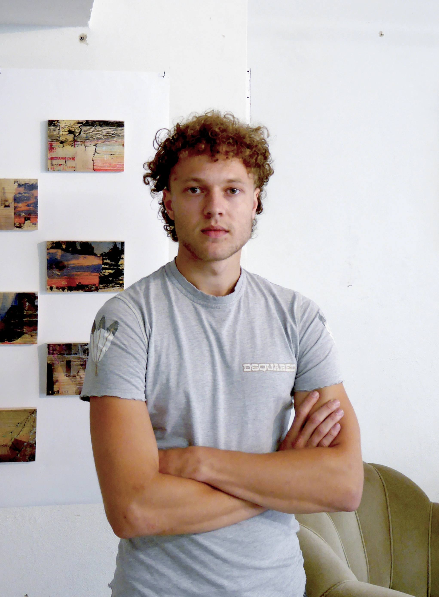

Soïc Kermarrec wurde 2004 in Leipzig geboren und lebt und arbeitet in dieser Stadt als Künstler und Architekturstudent.
Er arbeitet intuitiv und stellt mit Tinte und Acryl, verschiedenen Fragmenten und Schrift Abhängigkeiten zwischen den einzelnen Elementen her.